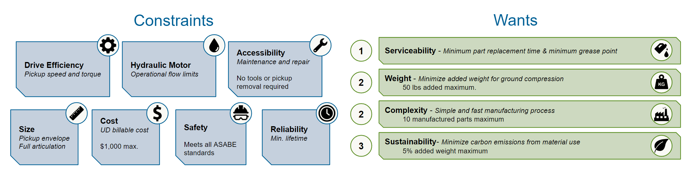
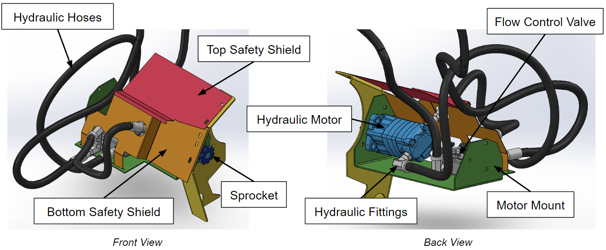
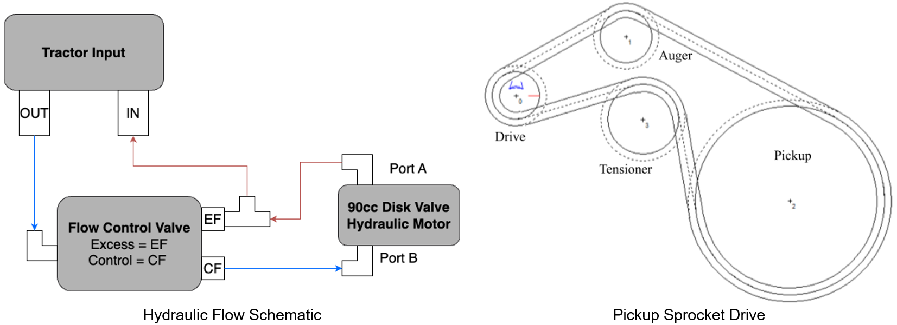
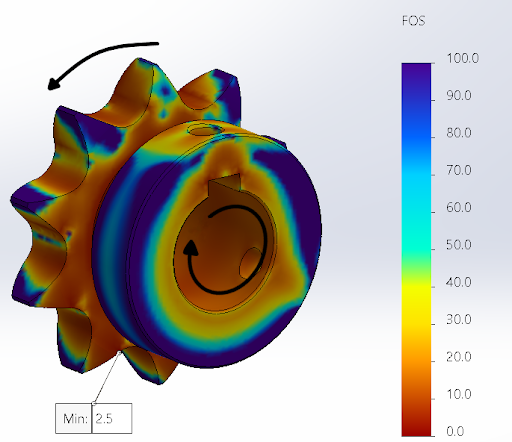
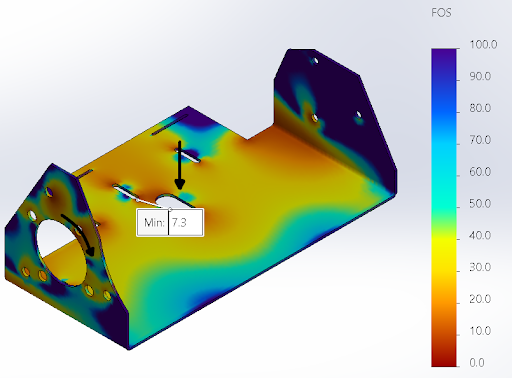

Variable Speed Round Baler Pickup
Introduction
This project was completed as part of the Senior Design Capstone during the Fall 2023 semester and was sponsored by New Holland Agriculture, a brand of CNH Industrial. For this project, I took a leadership role in organizing all meetings, perparing all documentation and reports, taking a large role in the design process, and completing several design validation metrics on the final prototype.
Problem Definition
Consistent and densely formed hay bales are vital for commercial farming, but current PTO-driven pickup designs in round balers hinder the bale formation process. These designs currently on the market use fixed gear ratios from the power take-off of the tractor to power the pickup, which means these designs...
- Cannot easily adjust to non-uniform windrows
- Continuously power the pickup, causing increased fuel consumption
- Lack independent speed control at the pickup
Project Scope
The aforementioned issues leads to the project scope:
In an effort to create more consistent bale sizes, a separate hydraulic motor needs to be integrated to power the pickup of a round baler in order to be able to have the pickup move at variable speeds rather than a fixed ratio based on the gear drive from the PTO input and without constraining the articulation of the pickup for travel.
Metrics
The evlaution of the project was determined by satisfaction of the following design metrics as outlined by the sponsor of the project. Due to intellectual property restrictions, several of the target values were omitted.
Final Design
The final design shown above was developed after a lengthy concept selection and design iteration process in order to refine and optimize the design before manufacturing. Concept selection was divided in two parts between the hydraulic motor to use and the location of this hydrualic motor on the baler. Using a weighted decision matrix, it was determined that mounting the motor directly to the RHS pickup plate which previously housed a clutch assembly would provide the most accessibility, and the simplicity would greatly limit costs and reliability concerns. A Pugh matrix was used to determine the best hydraulic motor to use, with several factors driving the decision making process such as: (1) the gear ratio range required between the motor and the pickup needed to achieve the target values of the pickup torque and speed, (2) the measurements of the motor such as the size and weight, and (3) the required mechanical drives such as sprocket sizes needed for the motor to be successfully implemented.
This design is constructed out of stock parts--such as with the hydraulic fittings, hoses, and motor; sprocket; and flow control valve--and sheet metal components, such as with the motor mount and two safety shields. Much of the design iterations focused on ensuring the motor sprocket has sufficient strength for continuous design, the hydraulic fittings can easily be assembled/oriented, and the hydraulic lines have sufficient room for their application.
The motor mount allows the motor to be attached to existing components on the round baler which means the assembly and design validation processes could be completed without destroying a current production model. The safety shields are designed to also be integrated to existing components and ensure safety compliance with the design without interferring with any of the hydraulic fittings. A mechanical spring flow control valve was used to limit the flow from the tractor to a range suitable for the motor to operate continuously without excess wear.
Design Validation
Functionality Testing
The team was able to validate the functionality of our design by performing field measurements at various flow speeds. Due to the time of year of testing, the team had to use corn stalks rather than traditional hay material like alfalfa. While this crop was much heavier, denser, and had more moisture than is expected, the design was still able to successfully create several hay bales.
The assembled design was proven to take up minimal space, was easily accessible, and greatly improved the functionality of the current round baler design.
From this test, it was determined that:
- The motor provides enough torque to create these bales even in these more adverse conditions
- The pickup can operate successfully in a range of speeds larger than the original target values
Failure Analysis
As part of the project metrics, the minimum lifetime of the design was determined by analyzing the most critical parts of the design as shown below. Literature analysis, engineering calculations, simulation results, and professional consultation were used during this process to ensure accuracy of all analyses.
Mechanical System
Failure of the sprocket and drive chain were performed using finite element analysis and IWIS chain life calculation software. Based on the suspected loads the motor applies on the sprocket in a worst-case plug event scenario, a minimum factor of safety of FOS = 2.5 was found. Using the sprocket configuration, sprocket sizes, supplied power, and conservative estimates for the lubrication and shock on the chain, the chain was found to exceed the lifetime durability desired.
Static Components
The motor mount was analyzed for its ability to withstand the weight of the various hydraulic components of the system while withstanding the torque of the motor during continuous operation. Based on finite element analysis results, a minimum factor of safety of FOS = 7.3 was found. The most critical bolts of the design were analyzed using distortion-energy theory and it was found that bolt deformation and joint seperation would not realistically occur.
Safety Standards
The team performed a series of safety validation tests on the final assembly to ensure full compliance with all relevant ASABE standards including:
- ISO 4254-11 (2010) Agricultural machinery — Safety — Part 11: Pick-up balers
- ISO 10448 (1994) (E) Agricultural tractors — Hydraulic pressure for implements
- ASAE S361.3 (1990) Safety for Portable Agricultural Auger Conveying Equipment
- ANSI S318.19 (2022) Safety for Agricultural Field Equipment
- ANSI AD3600 (2015) Tractors, machinery for agriculture and forestry, powered lawn and garden equipment - Operator's manuals - Content and format
This included visual inspections, mechanical testing, engineering calculations, and eventually field testing by baling crop as shown before. While the design passed almost all safety standards, the ANSI standard for Safety of Agricultural Field Equipment outlines that any guards should be able to withstand a load of 270lbs, which FEA shows the safety shields could not handle causing the metric to be failed. However, this standard is for the typical operation of commercial agricultural equipment--so because this is a research and development prototype focused more on the functionality of the design, full compliance of these deployment-ready products will be achieved as part of the path forward of the project with future iterations.
The team has already determined several possible ways to satisfy this standard, such as (1) increasing the thickness of the safety shields or (2) extending the width of the shields across the entire length of the motor mount to have two sets of bolted connections for increased strength.
Discussion
The project was a large success in allowing a current round baler model to be modified to incorporate a variable speed design and create several bales within the design specifications required. The overall design operated at a larger range of speeds than originally desired and was able to withstand several plug events with thicker hay material. The design was determined to have a sufficient durability desired for the round baler model, had minimal added weight which proves beneficial in reducing ground compression on crops, and was sustainable following CNH Industrial's sustainability guidelines. In addition to this, a cost analysis showed a relatively cheap design with several areas for drastic cost reduction in future iterations.
Reverse functionality of the final design.
Due to the implementation of a hydraulic motor independently powered from the rest of the baler, the design also showed reverse functionality in allowing the flow of the motor to be reverse during plug events. Typically, these plug events require a lengthy process to unjam the system to get back to operation again and sometimes, require the operator to exit the tractor cab to resolve this by hand. In this new design, plugs can be removed in seconds which has large implications to overall baling productivity.
For this project, I also completed an honors capstone analyzing the fuel consumption of the new design and determined the amount of expected savings the variable speed feature would bring. During this analysis, I created an interactive calculator to allow the engineering team at New Holland to set a variety of input parameters such as tractor ground speed, rated tractor engine speed, bale size, etc. and recieve out the expected fuel consumption of both the current and variable speed designs, the expected efficiency of the hydraulic system, the average bale throughput, and the overall savings in gallons per hour. Using brake specific fuel consumption plots, simulation fuel usage analysis, motor specifications, and ample literature research and professional consultation, it was determined that this design would cause fuel savings in typical operation.
The future of this project will require more extensive testing to get accurate field data measurements for realistic hay material and baling conditions. Failure analysis will be reassessed with laboratory destructive testing models used as well. In addition to the iterations mentioned previously, the design has capabilities to be implemented into a fully automated system with the hydraulic flow governed by the tractor's hydraulic flow control system, sensors implemented into the front of the tractor and pickup to determine the pickup speed needed for various windrow densities, and new sprockets added to the pickup drive system to further increase functionality and torque specifications at the pickup.